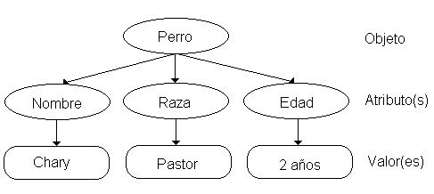
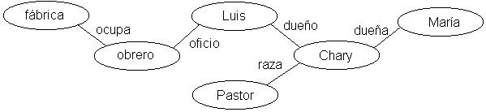
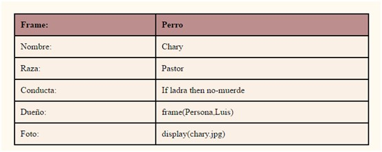
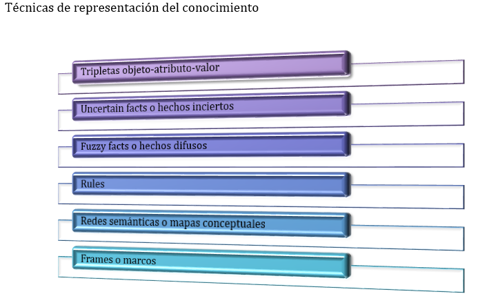
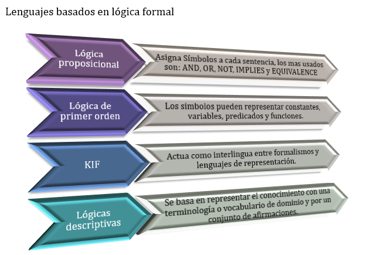
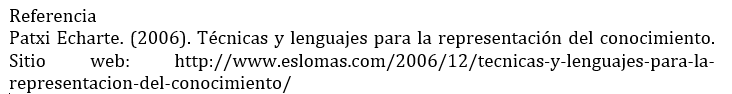

Es el proceso de transformación de éste a un dominio o un lenguaje simbólico para ser procesado en un computador.
Es un área de la inteligencia artificial cuyo objetivo fundamental es representar el conocimiento de una manera que facilite la inferencia (sacar conclusiones) a partir de dicho conocimiento.
Es una combinación de estructuras de datos (que nos permiten representar mediante un formalismo determinado las "verdades" relevantes en algún dominio) asociadas con mecanismos interpretativos que nos permiten manipular el conocimiento representado a fin de crear soluciones a problemas nuevos.
Metodología de Representación del Conocimiento
La Ontología: Es la forma de representar los conceptos de interés de un determinado dominio o conocimiento, análogo a una base de datos.
Característica Representación del Conocimiento en Inteligencia Artificial
Propiedades del Conocimiento en Inteligencia Artificial
Son hechos sobre objetos o situaciones. Posee mayor capacidad expresiva, menor capacidad creativa o computacional. Es conocimiento pasivo, expresado como sentencias acerca de los hechos del mundo que nos rodea (el saber que hacer).
Puede ser representado con modelos relacionales y esquemas basados en lógica. Los modelos relacionales pueden representar el conocimiento en forma de árboles, grafos o redes semánticas.
Los esquemas de representación lógica incluyen el uso de lógica proposicional y lógica de predicados.
Conocimiento Declarativo
Conocimiento Procedimental
Es aquel conocimiento compilado que se refiere a la forma de realizar una cierta tarea (el saber cómo hacerlo). Por ejemplo, los pasos necesarios para resolver una ecuación algebraica son expresados como conocimiento procedimental.
Los modelos procedimentales y sus esquemas de representación almacenan conocimiento en la forma de cómo hacer las cosas.
Pueden estar caracterizados por gramáticas formales, usualmente implantadas por sistemas o lenguajes procedimentales y sistemas basados en reglas (sistemas de producción). Por ejemplo, los pasos necesarios para resolver una ecuación algebraica son expresados como conocimiento procedimental.
Conocimiento Heurístico
Es un tipo especial de conocimiento usado por los humanos para resolver problemas complejos. El adjetivo heurístico significa medio para descubrir. Está relacionado con la palabra griega heuriskein que significa descubrir, encontrar.
Se entiende por heurístico a un criterio, estrategia, método o truco utilizado para simplificar la solución de problemas.
Técnicas de Representación
Propiedades del Sistema de Representación
La Representación del Conocimiento en Inteligencia Artificial ha de ser capaz
Todo problema es más sencillo de resolver si disponemos de conocimiento específico sobre él. Este conocimiento dependiente del dominio se combina con el conocimiento general sobre cómo resolver problemas.
Este conocimiento ha de permitir guiar los mecanismos de inteligencia artificial para obtener soluciones de manera más eficientes.
Una vez que se adquiere (del especialista) el conocimiento, es necesario encontrar una representación simbólica, clara, precisa y completa del mismo. Para ello podemos mencionar que existen diversas formas de representar el conocimiento, como las siguientes:
Representación del Conocimiento
Tripletas Objetivo-Atributo-Valor (OAV). Permiten derivar una representación gráfica del conocimiento organizada en tres niveles: objeto compuesto de atributos que contienen valores. Ejemplo

Redes Semánticas. Ofrecen un esquema más general y desestructurado que las tripletas OAV. Donde cada nodo representa cualquier concepto u objeto, y los arcos representan relaciones que existen entre dichos conceptos. Ejemplo:

Frames (Marcos). Un frame es una plantilla de objetos que contiene un conjunto de slots. Cada slot puede ser de alguno de los siguientes tipos: 1) un atributo simple con un valor opcional de default; 2) un procedimiento; 3) una restricción; 4) un apuntador a otro frame. En programación ofrece uno de los mecanismos de estructuración más poderosos y flexibles que existen en Inteligencia Artificial, e.g. puede implementar cualquier esquema de representación del conocimiento e incluso diversos paradigmas de programación como orientado a objetos, orientado a accesos, etc. Algunos idiomas de Lisp, como CommonLisp y CLOS ofrecen frames. Sin embargo, la complejidad de programar con frames puede fácilmente tornarse inadmisible e ineficiente cuando se posee poca habilidad, disciplina y conocimientos avanzados de programación con frames.

Formas de Representación del conocimiento
Una vez que se adquiere (del especialista) el conocimiento, es necesario encontrar una representación simbólica, clara, precisa y completa del mismo. Para ello podemos mencionar que existen diversas formas de representar el conocimiento, como las siguientes:
Representación del Conocimiento
Tripletas Objetivo-Atributo-Valor (OAV). Permiten derivar una representación gráfica del conocimiento organizada en tres niveles: objeto compuesto de atributos que contienen valores. Ejemplo
Redes Semánticas. Ofrecen un esquema más general y desestructurado que las tripletas OAV. Donde cada nodo representa cualquier concepto u objeto, y los arcos representan relaciones que existen entre dichos conceptos. Ejemplo:
Frames (Marcos).
Un frame es una plantilla de objetos que contiene un conjunto de slots. Cada slot puede ser de alguno de los siguientes tipos:
En programación ofrece uno de los mecanismos de estructuración más poderosos y flexibles que existen en Inteligencia Artificial, e.g. puede implementar cualquier esquema de representación del conocimiento e incluso diversos paradigmas de programación como orientado a objetos, orientado a accesos, etc.
Algunos idiomas de Lisp, como CommonLisp y CLOS ofrecen frames. Sin embargo, la complejidad de programar con frames puede fácilmente tornarse inadmisible e ineficiente cuando se posee poca habilidad, disciplina y conocimientos avanzados de programación con frames.
A continuación se te proporciona un recurso en el que encontrarás las formas de representar los conocimientos que hemos adquirido a lo largo de nuestra vida, la transmisión del conocimiento es parte fundamental para continuar enriqueciendo el nuestro, pero para ello, es importante saber cómo plasmarlo.
Nombre: Técnicas y lenguajes para la representación del conocimiento.



Hay muchos casos en los que podemos resolver situaciones complejas haciendo uso de reglas deterministas, hasta el punto de su uso consigue sistemas automáticos que se comportan como humanos expertos en un dominio particular permitiendo tomar decisiones delicadas, por ejemplo: en sistemas de control de tráfico, transacciones bancarias, o diagnóstico de enfermedades.
Entre las opciones disponibles, los sistemas basados en reglas se han convertido en una de las herramientas más eficientes para tratar de manera eficiente una buena colección de problemas, ya que las reglas deterministas constituyen la más sencilla de las metodologías utilizadas en sistemas expertos.
En estos sistemas, la base de conocimiento de la que se parte contiene las variables y el conjunto de reglas que definen el problema, y el motor de inferencia es capaz de extraer conclusiones aplicando métodos de la lógica clásica sobre esta base.
Una regla en este contexto es una proposición lógica que relaciona dos o más objetos del dominio e incluye dos partes, la premisa y la conclusión, que se suele escribir normalmente como “Si premisa, entonces conclusión”. Cada una de estas partes es una expresión lógica con una o más afirmaciones objeto-valor conectadas mediante operadores lógicos (y, o, o no).
Como hemos comentado, las bases de conocimiento se conforman a partir de dos tipos de elementos básicos, por una parte los datos (también conocidos como hechos o evidencias), y por otra el conocimiento (representado por el conjunto de reglas que rigen las relaciones entre los datos). Pero una vez tenemos esta información almacenada, necesitamos un mecanismo para manipular automáticamente sus componentes y extraer conclusiones.
A este mecanismo se le denomina motor de inferencia, que a partir de la base de conocimiento obtiene nuevas conclusiones, ampliando de esta forma el conjunto de hechos de la propia base de conocimiento Por ejemplo, si la premisa de una regla es cierta, entonces aplicando la regla lógica de Modus Ponens, la conclusión de la regla debe ser también cierta, y de esta forma los datos iniciales se incrementan incorporando las nuevas conclusiones.
Por ello, tanto los hechos iniciales o datos de partida como las conclusiones derivadas de ellos forman parte de los hechos o datos de que se dispone en un instante dado, obteniendo un proceso dinámico en el que el conocimiento se va generando por etapas.
Para obtener conclusiones, se pueden utilizar diferentes tipos de reglas y estrategias de inferencia y control, pero nosotros mostraremos aquí las más básicas y universales: Modus Ponens y Modus Tollens como sistemas básicos de inferencia, y encadenamiento de reglas hacia adelante y encadenamiento de reglas hacia atrás (orientado por objetivos), como estrategias de inferencia.
El encadenamiento de reglas hacia delante
Puede utilizarse cuando las premisas de algunas reglas coinciden con las conclusiones de otras, de forma que al aplicarlas sucesivamente sobre los hechos iniciales podemos obtener nuevos hechos.
A medida que obtenemos más hechos, podemos repetir el proceso hasta que no pueden obtenerse más conclusiones.
El encadenamiento de reglas hacia atrás
Parte del hecho que se quiere concluir y se mira qué reglas lo tienen como conclusión, se toman las premisas de estas reglas y se consideran como objetivos parciales que se quieren verificar.
Por un proceso de comparación con los hechos de la base de conocimiento un proceso de backtracking, se va decidiendo cuáles de los objetivos parciales se van cumpliendo y cuáles quedan pendientes.
En un sistema basado en reglas existen dos elementos básicos que sirven para la representación del conocimiento:
Conocimiento
Atributos. Un atributo es un símbolo que sirve para representar un conocimiento factual, i.e. aserción o hecho. Un atributo puede tener un valor indefinido, i.e. UNKNOWN, así como uno o más valores, i.e. multivalor.
NAME: auto
TYPE: symbol
CHOICES/EXPECT: sedan, van, vagoneta
PROMPT: "¿Qué tipo de carro desea comprar?"
PLURAL/MULTI: yes
DEFAULT: sedan
Tipos. Existen diversos tipos de atributos que puede proporcionar un lenguaje o shell, como son: símbolos, cadenas y caracteres, numéricos (enteros y reales) y booleanos.
Símbolo vs. Cadena: El símbolo es un elemento muy común de procesamiento en sistemas expertos, tanto que ha llegado a constituir lo que se conoce como Programación Simbólica, donde expresiones tales como:
Establecen una forma muy particular de interpretarse: si los atributos X, Ecuación y N son de tipo símbolo, los valores "\(12\)", "\(2^x+5^x\)" y "\(Juan\)" se almacenarán como expresiones simbólicas.
La manipulación simbólica contrasta con el procesamiento numérico basado en algoritmos. Por ejemplo, el procesamiento numérico de la expresión \(2^x+5^x\) requiere que \(x\) tenga un valor para obtener luego otro valor numérico, sin embargo, el procesamiento simbólico puede mantener el valor de x como una incógnita y manipular dicha ecuación, por ejemplo, una simplificación algebraica o despeje, para obtener otra representación simbólica derivada, e.g. \(7^x\). En otras palabras, en programación convencional los símbolos son mnemónicos que sirven para representar códigos de operaciones y localidades de memoria, pero en programación simbólica sirven para representar cosas, conceptos y conocimiento.
Otro ejemplo es la diferenciación entre variables y valores. Mientras que en programación convencional la expresión \(x = y\) copia el valor de la variable \(x\), en programación simbólica significa que x representa ahora al símbolo "\(y\)". Con la finalidad de evitar confusiones, las variables se representarán con mayúsculas, de tal forma que si tenemos:
Donde: 1) relaciona dos símbolos y 2) almacena el símbolo "\(y\)" en la variable \(x\).
El Símbolo = No es Igual. La expresión (1) no permite entonces asignar un valor sino comparar dos símbolos, y la expresión (2) se asigna un valor. Ambas usan el mismo símbolo =, una para comparar (equivale al == de C) y otra para asignar. Analicemos otras posibilidades:
En (1) ambas son variables, y pueden interpretarse de dos formas: (a) como una asignación, e.g. se asigna el valor del atributo Y al valor del atributo X, o (b) como una comparación, e.g. comprobar si ambos valores son iguales. Esto dependerá del contexto de la expresión, e.g. si es una premisa, o una conclusión de una regla, o un hecho.
En (2) existe también cierta ambigüedad, puede significar varias cosas: (a) la variable \(X\) almacena el símbolo "\(Y+2\)"; (b) \(X\) almacena el resultado de evaluar numéricamente la expresión \(Y+2\); (c) la expresión es falsa o verdadera dependiendo de si \(X\) es igual al valor de \(Y+2\).
Atributos Multivalor. Cuando se especifica un atributo de tipo PLURAL o MULTI, es
posible
que llegue a tener múltiples valores al mismo tiempo, e.g. auto={sedan, vagoneta}.
Preguntas y Valores Default. Del ejemplo:NAME: auto PROMPT: "¿Qué tipo de carro desea comprar?" DEFAULT: sedanDe donde tenemos que al encontrar la máquina de inferencias un atributo con valor desconocido, i.e. UNKNOWN, se busca su declaración PROMPT para desplegar al usuario el texto de la pregunta y esperar una respuesta, en caso contrario, se asume el valor de default.
En un sistema basado en reglas existen dos elementos básicos que sirven para la representación del conocimiento:
Conocimiento
Atributos. Un atributo es un símbolo que sirve para representar un conocimiento factual, i.e. aserción o hecho. Un atributo puede tener un valor indefinido, i.e. UNKNOWN, así como uno o más valores, i.e. multivalor.
NAME: auto
TYPE: symbol
CHOICES/EXPECT: sedan, van, vagoneta
PROMPT: "¿Qué tipo de carro desea comprar?"
PLURAL/MULTI: yes
DEFAULT: sedan
Tipos. Existen diversos tipos de atributos que puede proporcionar un lenguaje o shell, como son: símbolos, cadenas y caracteres, numéricos (enteros y reales) y booleanos.
Símbolo vs. Cadena: El símbolo es un elemento muy común de procesamiento en sistemas expertos, tanto que ha llegado a constituir lo que se conoce como Programación Simbólica, donde expresiones tales como:
Establecen una forma muy particular de interpretarse: si los atributos X, Ecuación y N son de tipo símbolo, los valores "\(12\)", "\(2^x+5^x\)" y "\(Juan\)" se almacenarán como expresiones simbólicas.
La manipulación simbólica contrasta con el procesamiento numérico basado en algoritmos. Por ejemplo, el procesamiento numérico de la expresión \(2^x+5^x\) requiere que \(x\) tenga un valor para obtener luego otro valor numérico, sin embargo, el procesamiento simbólico puede mantener el valor de x como una incógnita y manipular dicha ecuación, por ejemplo, una simplificación algebraica o despeje, para obtener otra representación simbólica derivada, e.g. \(7^x\). En otras palabras, en programación convencional los símbolos son mnemónicos que sirven para representar códigos de operaciones y localidades de memoria, pero en programación simbólica sirven para representar cosas, conceptos y conocimiento.
Otro ejemplo es la diferenciación entre variables y valores. Mientras que en programación convencional la expresión \(x = y\) copia el valor de la variable \(x\), en programación simbólica significa que x representa ahora al símbolo "\(y\)". Con la finalidad de evitar confusiones, las variables se representarán con mayúsculas, de tal forma que si tenemos:
Donde: 1) relaciona dos símbolos y 2) almacena el símbolo "\(y\)" en la variable \(x\).
El Símbolo = No es Igual. La expresión (1) no permite entonces asignar un valor sino comparar dos símbolos, y la expresión (2) se asigna un valor. Ambas usan el mismo símbolo =, una para comparar (equivale al == de C) y otra para asignar. Analicemos otras posibilidades:
En (1) ambas son variables, y pueden interpretarse de dos formas: (a) como una asignación, e.g. se asigna el valor del atributo Y al valor del atributo X, o (b) como una comparación, e.g. comprobar si ambos valores son iguales. Esto dependerá del contexto de la expresión, e.g. si es una premisa, o una conclusión de una regla, o un hecho.
En (2) existe también cierta ambigüedad, puede significar varias cosas: (a) la variable \(X\) almacena el símbolo "\(Y+2\)"; (b) \(X\) almacena el resultado de evaluar numéricamente la expresión \(Y+2\); (c) la expresión es falsa o verdadera dependiendo de si \(X\) es igual al valor de \(Y+2\).
Atributos Multivalor. Cuando se especifica un atributo de tipo PLURAL o MULTI, es
posible
que llegue a tener múltiples valores al mismo tiempo, e.g. auto={sedan, vagoneta}.
Preguntas y Valores Default. Del ejemplo:NAME: auto PROMPT: "¿Qué tipo de carro desea comprar?" DEFAULT: sedanDe donde tenemos que al encontrar la máquina de inferencias un atributo con valor desconocido, i.e. UNKNOWN, se busca su declaración PROMPT para desplegar al usuario el texto de la pregunta y esperar una respuesta, en caso contrario, se asume el valor de default.
La presentación del conocimiento y su explicación para esta secuencia se completa de manera práctica-teórica con ejemplos que se pueden encontrar en la siguiente página. Cada uno con un aporte de conocimiento especial al tema.
Nombre: Sistemas basados en reglas
Todo problema es más sencillo de resolver si disponemos de conocimiento específico sobre él, este conocimiento dependiente del dominio se combina con el conocimiento general sobre cómo resolver problemas.
Este conocimiento ha de permitir guiar a los mecanismos de IA para obtener soluciones de manera más eficiente y nos enfrentamos a los problemas de:
Llamaremos información al conjunto de datos básicos, sin interpretar, que se obtienen como entrada del sistema. Por ejemplo: Los datos numéricos que aparecen en una analítica de sangre o los datos de los sensores de una planta química.
Llamaremos conocimiento al conjunto de datos de primer orden, que modelan de forma estructurada la experiencia que se tiene sobre un cierto dominio o que surgen de interpretar los datos básicos. Por ejemplo: La interpretación de los valores de la analítica de sangre o de los sensores de la planta química para decir si son normales, altos o bajos, preocupantes, peligrosos o el conjunto de estructuras de datos y métodos para diagnosticar a pacientes a partir de la interpretación del análisis de sangre, o para ayudar en la toma de decisiones de que hacer en la planta química
Los sistemas de IA necesitan diferentes tipos de conocimiento que no suelen estar disponibles en bases de datos y otras fuentes de información:
Intuitivamente podemos decir que: Conocimiento = Información + Interpretación
Para representar algo necesitamos saber:
Por desgracia no hay respuestas completas para todas estas preguntas desde el punto de vista biológico o neurofisiológico.
Construiremos modelos que simulen la adquisición, estructuración y manipulación del conocimiento y que nos permitan crear sistemas artificiales inteligentes.
Un esquema de representación es un instrumento para codificar la realidad en un ordenador
Es importante distinguir entre:
Desde un punto de vista informático un esquema de representación puede ser descrito como una combinación de:
La parte estática está formada por:
Escogida.
R(Elemento_estructura, Mundo Real)
La parte dinámica está formada por:
Se ha de tener siempre en cuenta que nuestra representación siempre es incompleta, debido a:
El problema de modificación del mundo está ligado a los procedimientos de adquisición y mantenimiento de la representación (Frame Problem).
Los problemas de volumen y complejidad de la realidad están relacionados con la granularidad de la representación.
Propiedades de un sistema de representación
Un sistema de representación debe poseer las siguientes propiedades
Para poder usar información, primero debemos comprenderla. El proceso de comprensión es una asimilación de la información en la estructura compleja de nuestro conocimiento. La información debe pasar a ser parte de nuestro conocimiento antes de poder ser usada.
Por ejemplo, cuando queremos conocer alguna ciudad extranjera, podemos comenzar estudiando el mapa de la ciudad. Estudiando el mapa, al comienzo nosotros memorizamos la disposición principal de la ciudad. A medida que el estudio avanza, asimilamos la información provista por el mapa en nuestra mente. Cuando, más tarde, viajamos a la ciudad, usamos la información asimilada como conocimiento para encontrar nuestro camino.
Una vez que la información es correctamente asimilada, puede ser usada como conocimiento. Toda información puede asimilarse transformándose en conocimiento.
La información se expresa a sí misma
Aplicamos los resultados del conocimiento a una acción o en la creación de nueva información. Hay siempre una parte del conocimiento usado, expresado en el resultado.
Usando el lenguaje, expresamos conocimiento que pertenece al lenguaje. La estructura de las oraciones y la selección de palabras que usamos llevan información acerca del lenguaje.
Cuando construimos una casa, expresamos parte del conocimiento acerca de la construcción de casas en la casa en sí misma.
Una vez que tenemos un entendimiento básico de un lenguaje extranjero, podemos extender nuestro conocimiento sobre el lenguaje oyéndolo o leyéndolo.
Esto es posible porque parte del conocimiento del lenguaje está expresado en la aplicación del lenguaje que leemos.
El hecho que la información es expresada por sus aplicaciones es la mayor contribución a su propagación.
El conocimiento es información
La información asimilada se transforma en conocimiento. El uso del conocimiento causa la expresión del conocimiento usado junto con el resultado. Hasta el conocimiento innato es expresado en nuestras acciones, si no fuera así, no sería posible investigar este conocimiento en el comportamiento de los niños.
Esto ilustra que una mutua traducción es posible entre información y conocimiento. La diferencia entre conocimiento e información radica en las circunstancias más que en la naturaleza de ésta.
Como una primera aproximación, podemos sugerir que todo lo que pueda ser comunicado es información. Debido a que nosotros comunicamos conocimiento continuamente, no debemos extender esta noción de información para incluir comportamiento.
Pero, información y conocimiento no son sinónimos. La información es el término general y el conocimiento es información bajo determinadas condiciones. Cuando la información se encuentra en las condiciones adecuadas para propagarse, la llamamos conocimiento.
{kind=link}